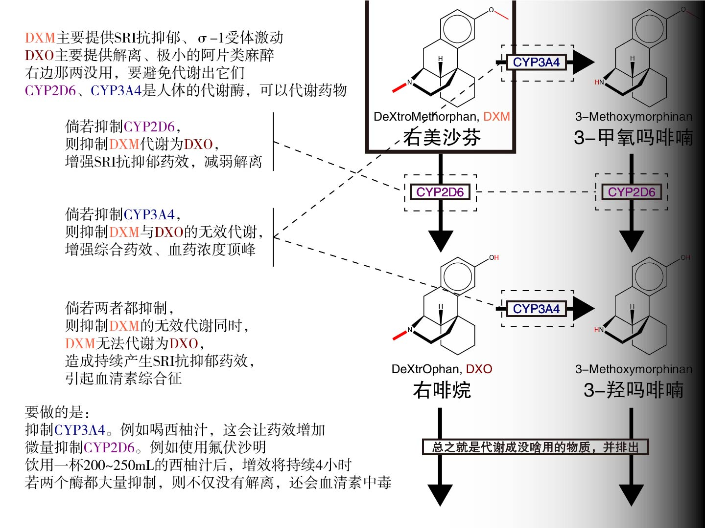

恭喜！2024.05.07，一个几乎从未在精神科露面的药物，现今已经跨越为精二了！为我们的小美庆祝！阶级跨越！
右美沙芬(Dextromethorphan, DXM) 是非成瘾性中枢止咳药，属于解离麻醉剂与抗抑郁剂。一般以氢溴酸配合物，即 氢溴酸右美沙芬。由于读音相近与文化，右美沙芬俗称 优美、野猫上坟、美莎等多种别称
无论是医学上还是od上，右美沙芬没有任何替代品
右美沙芬具有复杂的代谢、耐受性质
右美沙芬在体内会进过三种酶而代谢，并以肾经尿排泄。约2小时，血药浓度达到峰值。半衰期为3.4~5.6小时，一般取3.4小时。因耐受性，半衰期可达到20小时[2]

“饮用一杯……持续4小时”引用于psywiki
关于如何抑制酶，详见酶抑制剂
右美沙芬具有奇怪的耐药性。它很容易产生很大很大很大的耐药性
天生耐受性：因人种、基因、CYP2D6的基因表达不同，天生对右美沙芬的耐药性也不同。由此分类为慢速代谢、中速代谢、快速代谢。尤其是欧洲白种人群，慢速代谢者的频发率为5%~10%，而中国汉族人群，慢速代谢者的频发率为0.76%[3]
后天耐药性：服药会产生耐药性，剩下的不用多说。需注意的是，右美沙芬的耐药性之增长，非常快速。据报告，到后期，耐药下的72t也仅仅等同于未耐药下的24t
停药后，耐受性需要约7天以减少一半，由此可知，耐受性需要两个月以恢复至基线[4]
氢溴酸右美沙芬片【单方制剂】——
白云山（经典橙）：盒装15mg×每盒2板×每板12片，价格为14元（olaiya）
白云山（白背景）：盒装15mg×每盒1板×每板12片，价格约6元
宛衡：盒装15mg×每盒1板×每板24片，价格不明
中大：盒装15mg×每盒1板×每板24片，价格不明
华南：盒装15mg×每盒1板×每板12片，价格不明
氢溴酸右美沙芬分散片【单方制剂】——
可乐尔：盒装15mg×每盒2板×每板12片，价格为不明
愈美片【复方制剂】——
云药：盒装15mg×每盒2板×每板12片，价格约12元
新康泰克：盒装15mg×1板×每板12片，价格约20元
国内的氢溴酸右美沙芬糖浆似乎含有催吐剂，请不要用它
右美沙芬有着特殊的剂量称呼。我们将这个系统称为西格玛高原，各个药效称为第几高原
第四高原是第三高原的逐步增强。随剂量升高——
第五高原的概念类似极限∞，只是被假设在第四高原之上，还存在着一个第五高原
⚠️ 第五高原补充及注意事项⚠️
经实验报告数据与统计，有少数测试人员进行过第五高原反应测试（数据补充）
第五高原被描述为“无知觉的意识分离”与「接近上帝视角的空间与时间概念的体验」被测试人员说描述为最开始体验会极度的舒适与平和，但后面会带来极度的痛苦与疼痛，「精神层面」与「生理层面」都被描述为极度的痛苦，在第五高原反应（猜测）时被测试者描述为「通道」「光线」与「接近神的意识」，目前被猜测为是一种极端的濒死体验，但经过多轮测试，被测试者的第五高原反应均为同一体验，甚至毫无差距，但在第五高原后伴随的便是药物中毒反应，被测试者也送医进行抢救⚠️非专业人员切勿尝试⚠️也请各位留意千万不要这样伤害自己
死亡剂量：从第四高原开始，死亡概率逐步攀升。120t以上，死亡概率极大
推荐剂量：4t ~ 12t或可能是18t ~ 30t
最高剂量：60t
右美沙芬被测试后得出结论：在16t≤剂量≤(28t~30t)时，将6～8t左右的剂量替换为普瑞巴林，可抑制od右美沙芬带来的神经性疼痛、抽搐以及降低od过量风险的作用。但不建议也不倡导任何形式的混合药剂od，请各位注意这只是数据补充，切勿尝试
起效时：40min~1h
来效时：1h~1.5h
顶峰时：1.5h~2.5h
退效时：2.5h~3.5h
残效时：3.5h~8h
总效时：8h~12h
需注意，体重不同剂量不同，上述剂量是针对60kg的人的。你的体重除以60，再乘以上述之中的剂量，即为适应你的剂量。
不同人有对右美沙芬不同的天生耐药性。如果你非要od，请逐步爬升剂量地服用右美沙芬
笔者认为，只会叠量的纯纯是XX
右美沙芬是od的起源，仅限od
右美沙芬是全体od药物中，生理副作用最小的药物
在没有足够的了解下，不要将右美沙芬与任何抗抑郁药进行联用
虽然右美沙芬的化学结构与吗啡相似，但两者完全是两种药效。请不要混淆视听
右美沙芬引起撤药反应，请使用氟伏沙明等SSRI抗抑郁药进行接替，然后慢慢减少剂量……
氢溴酸右美沙芬引起呕吐，初步认为是因为氢溴酸的刺激，请吃一些食物垫垫肚子，并不要喝太多液体。另外，据多方报告，茶水是右美沙芬的强力催吐剂，作用机理不清楚。因此，服用右美沙芬后，若需要催吐，请喝下浓茶水，并再喝下很多水，如此呕吐类似于洗胃
关于右美沙芬的过度服用引发的中毒反应，首先立刻考虑就医情况
（由于笔者认识有限，难免叙述出现差错缺漏。欢迎补充）
那是《药品网络销售禁止清单（第一版）》之前——站内拷贝文在这里，不管是二类还是三类，甚至是一类，有很多很多的人，没有任何阻碍地走进了右美沙芬药效里……那时的右美沙芬非常便宜，在网上什么药厂的都有，30t一盒只需要6元。
首先是圈内师老师的视频，其次是看起来像是心理学视频作者的视频，底层原理的“背刺”，最后广州禁毒也开始入场。最终的结局便是在2022.11.30，《禁止清单》出现了
《禁止清单》好吗？笔者想说它不仅好，还是非常优质的举措。如果你看过引论中的分类，那你就更能理解：一或二类人员“试试看”的心态被这一张禁令所阻止，停止在第一次尝试之前。至于三类人员的话，都到三类情况了，哪还顾得上？不该吃的人拦下来了，该吃的人终究拦不住。《禁止清单》减少了各种人员的第一次尝试，具有良好的作用
热度退去，但滥用从未停止。从右美沙芬被禁止售卖所出发，并不禁止的金刚烷胺与苯海索，美金刚与普瑞巴林又被挖掘出来而滥用，然而它们前三者吃起来不仅没有任何欣快感，还很痛苦，只有致幻剂的功效能支撑它们被滥用的意义，后者普瑞巴林虽然有欣快感作用，但它的药物使用玄乎其玄非常古怪，药效也更加因人而异。再也没有一个药物能复刻右美沙芬的成功了。而除开od圈子里头，在笔者所接触的平常的爱好圈子中，越来越多从前看起来和od毫无相关的人开始od起来，一幅沧海桑田的景色就在眼前
广州已经出现右美沙芬尿检纸了，真是下有下策上有对策
好好好现在是2024.05.07，右美沙芬已经跨越为精二了可喜可贺